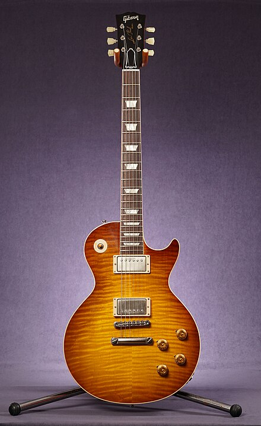

깁슨(Gibson Brands, Inc.)은 미국의 악기 제조사 및 브랜드로, 펜더와 함께 일렉트릭 기타 브랜드의 두 정상으로 여겨지며 100년이 넘는 유서 깊은 역사를 가지고 있다. 그리고 동시에 헤비쉐입 기타의 아버지로 플라잉 V, 익스플로러, 모던같은 특이한 형태의 일렉트릭 기타들을 출시하는 등 보수적인 브랜드라는 편견과는 달리 과거부터 현재까지도 나름 혁신적인 악기제작 방식들을 실험해오고 있는 브랜드이기도 하다.
펜더의 일렉트릭 기타가 볼트 온 넥[3]같은 상대적으로 값싸고 대량생산에 최적화된 방식을 가지고 있다면, 깁슨은 나무를 깎아 접착제로 붙이는 전통적인 방식을 현재까지도 고수하고 있다. 이는 깁슨 특유의 두꺼운 톤과 긴 서스테인을 만드는 데 도움을 주나 후술할 생산 단가 상승과 같은 부작용도 함께 낳고 있다.